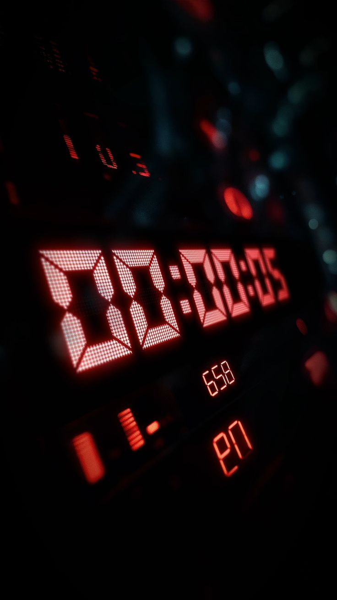

Sobre nós
A Time Safe é um serviço com o qual você pode finalmente deixar sua marca no cotidiano do cidadão comum. Nosso trabalho vendendo os horários do dia já é reconhecido por 187 dos 193 países membros da Nações Unidas, então o seu horário não é apenas reconhecido nos seus arredores imediatos, mas também em vários cantos do planeta!

Como funciona?
O processo é extremamente simples! Basta ir para a barra superior, ir na “Tabela de preços” e requisitar o horário desejado! Nós vendemos diversas faixas de tempo para nossos clientes, contendo uma diversa seleção de horas, minutos e segundos que você pode comprar e tornar apenas seu. Após a compra, você pode fazer que quiser com seu horário adquirido, podendo renomeá-lo, vendê-lo, removê-lo do dia e muito mais!
Eficiência
Comparado com os outros serviços de venda de horário, o TimeSafe tem destaque na rapidez e eficiência que temos na efetivação do comércio de horários. Sempre visamos trazer o nosso serviço temporal em tempo hábil!
E se eu quiser um horário que já tem dono?
Não se alarme! Nosso serviço além de vender os horários, também um canal comunicativo que, com apoio da nossa equipe, possibilita uma negociação entre os clientes sobre como o horário pode ser dividido, seja a partir de parcelas específicas (como os segundos dentro de cada minuto) ou a parcela de tempo como um todo
O QUE ESTÁ ESPERANDO?
Sua faixa exclusiva no tempo está a apenas um clique de distância.
COMPRE CONOSCO JÁ!